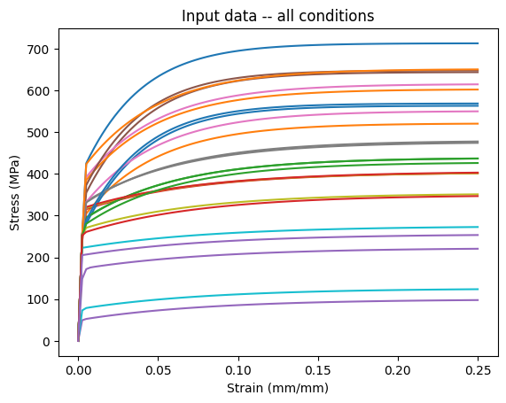
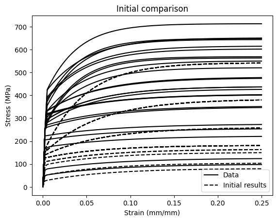
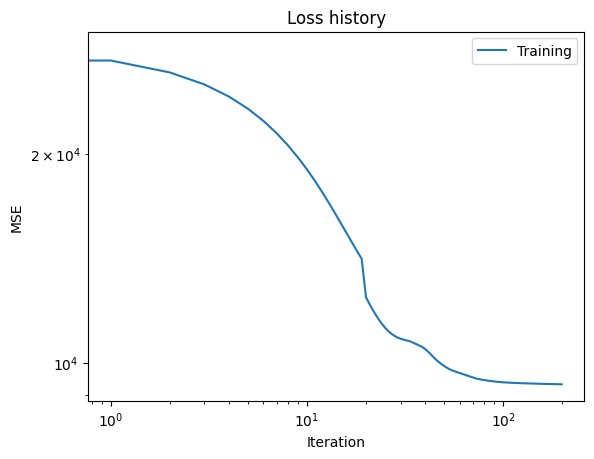
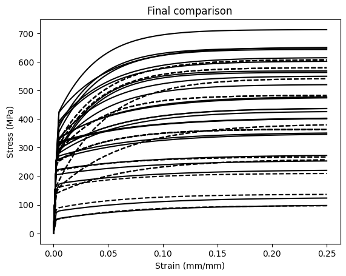

Deterministic material model calibration¶
This is a complete example of using the pyzag bindings to NEML2 to calibrate a material model against experimental data. demo_model.i defines the constitutive model, which is a structural material model describing the evolution of strain and stress in the material under mechanical load. The particular demonstration is a fairly complex model where the material responds differently as a function of both temperature and strain rate. The material deformation is driven by an axial strain and all the other stress components are zero.
In this example we:
Load the model in from an input file and wrap it for use in pyzag
Setup a grid of “experimental” conditions spanning several strain rates and temperatures
Replace the original model parameters with samples from a narrow normal distrubtion, centered on the orignial model mean, and run the model over the experimental conditions. This then becomes our synthetic input data.
Replace the original model parameters with random initial guesses (taken from a very wide normal distribution around the true values).
Setup the model calibration with a gradient-descent method by scaling the model parameters and resulting gradient values.
Calibrate the model against the synthetic experimental data.
Plot the results and print the calibrated parameter values, to see how close we can come to the true values.
The accuracy of the final model and the calibrated parameter values is heavily dependent on the choice of the normal distributions for the synthetic data and the initial parameter guesses. For narrow distributions for both the model can exactly recover the original parameter values. For wider distributions the calibrated model will not be exact, but will still accurately capture the mean of the synthetic tests.
import torch
import torch.distributions as dist
import neml2
from pyzag import nonlinear, reparametrization, chunktime
import matplotlib.pyplot as plt
from matplotlib.lines import Line2D
import tqdm
Setup the synthetic experimental conditions¶
Setup the loading conditions for the “experiments” we’re going to run. These will span several strain rates (nrate) and temperatures (ntemperature). Overall, we’ll run nbatch experiments. Also setup the maximum strain to pull the material through max_strain and the number of time steps we’re going to use for integration ntime.
nrate = 5
ntemperature = 5
nbatch = nrate * ntemperature
max_strain = 0.25
ntime = 100
rates = torch.logspace(-6, 0, nrate, device=device)
temperatures = torch.linspace(310.0, 1190.0, ntemperature, device=device)
Define the variability in the synthetic data and for our initial guess at the parameters¶
These control the variability in the synthetic data (actual_cov) and the variability of the initial guess at the parameter values (guess_cov)
actual_cov = 0.025
guess_cov = 0.2
Setup the actual model¶
This class is a thin wrapper around the underlying pyzag wrapper for NEML2. All it does is take the input conditions (time, temperature, and strain), combine them into a single tensor, call the pyzag wrapper, and return the stress.
class SolveStrain(torch.nn.Module):
"""Just integrate the model through some strain history
Args:
discrete_equations: the pyzag wrapped model
nchunk (int): number of vectorized time steps
rtol (float): relative tolerance to use for Newton's method during time integration
atol (float): absolute tolerance to use for Newton's method during time integration
"""
def __init__(self, discrete_equations, nchunk=1, rtol=1.0e-6, atol=1.0e-4):
super().__init__()
self.discrete_equations = discrete_equations
self.nchunk = nchunk
self.cached_solution = None
self.rtol = rtol
self.atol = atol
def forward(self, time, temperature, loading, cache=False):
"""Integrate through some time/temperature/strain history and return stress
Args:
time (torch.tensor): batched times
temperature (torch.tensor): batched temperatures
loading (torch.tensor): loading conditions, which are the input strain in the first base index and then the stress (zero) in the remainder
Keyword Args:
cache (bool): if true, cache the solution and use it as a predictor for the next call.
This heuristic can speed things up during inference where the model is called repeatedly with similar parameter values.
"""
if cache and self.cached_solution is not None:
solver = nonlinear.RecursiveNonlinearEquationSolver(
self.discrete_equations,
step_generator=nonlinear.StepGenerator(self.nchunk),
predictor=nonlinear.FullTrajectoryPredictor(self.cached_solution),
nonlinear_solver=chunktime.ChunkNewtonRaphson(rtol=self.rtol, atol=self.atol),
)
else:
solver = nonlinear.RecursiveNonlinearEquationSolver(
self.discrete_equations,
step_generator=nonlinear.StepGenerator(self.nchunk),
predictor=nonlinear.PreviousStepsPredictor(),
nonlinear_solver=chunktime.ChunkNewtonRaphson(rtol=self.rtol, atol=self.atol),
)
# We could pass this in as input, but it's easy enough to do here
control = torch.zeros_like(loading)
control[..., 1:] = 1.0
# Build the per-force typed-wrapper dict and pack into a SparseVector
# whose layout matches the pyzag-wrapped model's force layout. v3
# SparseVector takes a dict keyed by variable name (the v2 list-by-
# fvars-order pattern was retired). ``.data`` on the assembled
# typed Tensor surfaces the raw torch.Tensor that pyzag wants.
forces = {
"t": neml2.Scalar(time, 0),
"temperature": neml2.Scalar(temperature, 0),
"fixed_values": neml2.SR2(loading, 0),
"control": neml2.SR2(control, 0),
}
forces = (
neml2.SparseVector(self.discrete_equations.flayout, forces).assemble().tensors[0].data
)
state0 = torch.zeros(
forces.shape[1:-1] + (self.discrete_equations.nstate,), device=forces.device
)
result = nonlinear.solve_adjoint(solver, state0, len(forces), forces)
if cache:
self.cached_solution = result.detach().clone()
return result[..., 0:1]
Actually setup the model¶
Load the NEML model from disk, wrap it in both the pyzag wrapper and our thin wrapper class above. Exclude some of the model parameters we don’t want to calibrate.
nmodel = neml2.load_nonlinear_system("demo_model.i", "eq_sys")
nmodel.to(device=device)
pmodel = neml2.pyzag.NEML2PyzagModel(
nmodel,
exclude_parameters=[
# Elasticity coefficients are baked-in physical constants for
# this demo; we don't calibrate them.
"elasticity_E",
"elasticity_nu",
# Alternate yield surface used internally; its sy=0 literal
# would also break Normal sampling below if not excluded.
"yield_zero_sy",
# Interpolation table abscissae are fixed (temperature knots);
# only the ordinates are calibration targets.
"R_abscissa",
"d_abscissa",
"mu_abscissa",
# mu_ordinate is the known shear modulus, not calibrated.
"mu_ordinate",
# SR2LinearCombination's (+1, -1, 0) weights/offset are
# definitional; the offset = 0 also breaks Normal sampling.
"Eerate_weight_0",
"Eerate_weight_1",
"Eerate_offset",
],
)
model = SolveStrain(pmodel)
Create the input tensors¶
Actually setup the full input tensors based on the parameters above
time = torch.zeros((ntime, nrate, ntemperature), device=device)
loading = torch.zeros((ntime, nrate, ntemperature, 6), device=device)
temperature = torch.zeros((ntime, nrate, ntemperature), device=device)
for i, rate in enumerate(rates):
time[:, i] = torch.linspace(0, max_strain / rate, ntime, device=device)[:, None]
loading[..., 0] = torch.linspace(0, max_strain, ntime, device=device)[:, None, None]
for i, T in enumerate(temperatures):
temperature[:, :, i] = T
time = time.reshape((ntime, -1))
temperature = temperature.reshape((ntime, -1))
loading = loading.reshape((ntime, -1, 6))
Replace the model parameters with random values¶
Sampled from a normal distribution controlled by the actual_cov parameter.
This controls the randomness in the input synthetic test data
# Replace with samples from normal
actual_parameter_values = {}
for n, p in model.named_parameters():
actual_parameter_values[n] = p.data.detach().clone().cpu()
ndist = dist.Normal(p.data, torch.abs(p.data) * actual_cov).expand((nbatch,) + p.shape)
p.data = ndist.sample().to(device)
Run the model to generate the synthetic data¶
with torch.no_grad():
data = model(time, temperature, loading)
Plot the synthetic data¶
plt.plot(loading.cpu()[..., 0], data[..., 0].cpu())
plt.xlabel("Strain (mm/mm)")
plt.ylabel("Stress (MPa)")
plt.title("Input data -- all conditions")
plt.show()

Setup the model for training¶
Replace the parameter values with random initial guesses, with variability controlled by the guess_cov parameter.
# Now replace our original parameter with random values over a range
guess_parameter_values = {}
for n, p in model.named_parameters():
p.data = torch.normal(
actual_parameter_values[n], torch.abs(actual_parameter_values[n]) * guess_cov
).to(device)
guess_parameter_values[n] = p.data.detach().clone()
Scale the model parameters¶
Our material model parameters have units. In general, the parameter values will have different magnitudes from each other, which affects the scale of the gradients. Unbalanced gradients in turn affect the convergence of gradient descent optimization methods.
Typically we’d scale the training data to fix this problem. However, again our data has units and a physical meaning we want to preserve.
As an alternative we can scale the parameter values themselves both to clip the values to a physical range and to scale the gradients and hopefully improve the convergence of the optimization step. We do that here, in a way that should be mostly invisible to the training algorithms.
# Scale to get better performance
A_scaler = reparametrization.RangeRescale(
torch.tensor(-12.0, device=device), torch.tensor(-4.0, device=device)
)
B_scaler = reparametrization.RangeRescale(
torch.tensor(-1.0, device=device), torch.tensor(-0.5, device=device)
)
C_scaler = reparametrization.RangeRescale(
torch.tensor(-8.0, device=device), torch.tensor(-3.0, device=device)
)
R_scaler = reparametrization.RangeRescale(
torch.tensor([0.0, 0.0, 0.0, 0.0], device=device),
torch.tensor([500.0, 500.0, 500.0, 500.0], device=device),
)
d_scaler = reparametrization.RangeRescale(
torch.tensor([0.01, 0.01, 0.01, 0.01], device=device),
torch.tensor([50.0, 50.0, 50.0, 50.0], device=device),
)
# v3 names: VoceIsotropicHardening's saturated_hardening / saturation_rate
# come from ScalarLinearInterpolation, so the calibration knobs are the
# ordinates of those tables (R_ordinate / d_ordinate). The v2 fixture
# called them R_Y / d_Y.
model_reparameterizer = reparametrization.Reparameterizer(
{
"discrete_equations.A_value": A_scaler,
"discrete_equations.B_value": B_scaler,
"discrete_equations.C_value": C_scaler,
"discrete_equations.R_ordinate": R_scaler,
"discrete_equations.d_ordinate": d_scaler,
},
error_not_provided=True,
)
model_reparameterizer(model)
Run the model with the initial parameter values¶
Just to see how far away from the training data we starting from.
# Generate the initial results so we know where we are starting from
with torch.no_grad():
initial_results = model(time, temperature, loading)
plt.plot(loading.cpu()[..., 0], data.cpu()[..., 0], "k-")
plt.plot(loading.cpu()[..., 0], initial_results.cpu()[..., 0], "k--")
plt.xlabel("Strain (mm/mm)")
plt.ylabel("Stress (MPa)")
plt.title("Initial comparison")
handles = [
Line2D([], [], linestyle="-", color="k", label="Data"),
Line2D([], [], linestyle="--", color="k", label="Initial results"),
]
plt.legend(handles=handles)
plt.show()

Calibrate the model against the synthetic data¶
Apply a fairly standard gradient-descent algorithm to adjust the model parameters to better match the synthetic data. Plot the loss versus iteration data from training.
niter = 200
lr = 5.0e-3
optimizer = torch.optim.Adam(model.parameters(), lr=lr)
loss_fn = torch.nn.MSELoss()
titer = tqdm.tqdm(
range(niter),
bar_format="{desc}{percentage:3.0f}%|{bar}|{n_fmt}/{total_fmt}{postfix}",
)
titer.set_description("Loss:")
loss_history = []
for i in titer:
optimizer.zero_grad()
res = model(time, temperature, loading, cache=True)
loss = loss_fn(res, data)
loss.backward()
loss_history.append(loss.detach().clone().cpu())
titer.set_description("Loss: %3.2e" % loss_history[-1])
optimizer.step()
plt.loglog(loss_history, label="Training")
plt.xlabel("Iteration")
plt.ylabel("MSE")
plt.legend(loc="best")
plt.title("Loss history")
plt.show()
0%| |0/200
Loss:: 0%| |0/200
Loss: 2.84e+04: 0%| |0/200
Loss: 2.84e+04: 0%| |1/200
Loss: 2.72e+04: 0%| |1/200
Loss: 2.72e+04: 1%| |2/200
Loss: 2.62e+04: 1%| |2/200
Loss: 2.62e+04: 2%|▏ |3/200
Loss: 2.52e+04: 2%|▏ |3/200
Loss: 2.52e+04: 2%|▏ |4/200
Loss: 2.42e+04: 2%|▏ |4/200
Loss: 2.42e+04: 2%|▎ |5/200
Loss: 2.32e+04: 2%|▎ |5/200
Loss: 2.32e+04: 3%|▎ |6/200
Loss: 2.23e+04: 3%|▎ |6/200
Loss: 2.23e+04: 4%|▎ |7/200
Loss: 2.14e+04: 4%|▎ |7/200
Loss: 2.14e+04: 4%|▍ |8/200
Loss: 2.06e+04: 4%|▍ |8/200
Loss: 2.06e+04: 4%|▍ |9/200
Loss: 1.97e+04: 4%|▍ |9/200
Loss: 1.97e+04: 5%|▌ |10/200
Loss: 1.90e+04: 5%|▌ |10/200
Loss: 1.90e+04: 6%|▌ |11/200
Loss: 1.83e+04: 6%|▌ |11/200
Loss: 1.83e+04: 6%|▌ |12/200
Loss: 1.76e+04: 6%|▌ |12/200
Loss: 1.76e+04: 6%|▋ |13/200
Loss: 1.69e+04: 6%|▋ |13/200
Loss: 1.69e+04: 7%|▋ |14/200
Loss: 1.64e+04: 7%|▋ |14/200
Loss: 1.64e+04: 8%|▊ |15/200
Loss: 1.58e+04: 8%|▊ |15/200
Loss: 1.58e+04: 8%|▊ |16/200
Loss: 1.53e+04: 8%|▊ |16/200
Loss: 1.53e+04: 8%|▊ |17/200
Loss: 1.49e+04: 8%|▊ |17/200
Loss: 1.49e+04: 9%|▉ |18/200
Loss: 1.45e+04: 9%|▉ |18/200
Loss: 1.45e+04: 10%|▉ |19/200
Loss: 1.41e+04: 10%|▉ |19/200
Loss: 1.41e+04: 10%|█ |20/200
Loss: 1.24e+04: 10%|█ |20/200
Loss: 1.24e+04: 10%|█ |21/200
Loss: 1.21e+04: 10%|█ |21/200
Loss: 1.21e+04: 11%|█ |22/200
Loss: 1.18e+04: 11%|█ |22/200
Loss: 1.18e+04: 12%|█▏ |23/200
Loss: 1.16e+04: 12%|█▏ |23/200
Loss: 1.16e+04: 12%|█▏ |24/200
Loss: 1.14e+04: 12%|█▏ |24/200
Loss: 1.14e+04: 12%|█▎ |25/200
Loss: 1.12e+04: 12%|█▎ |25/200
Loss: 1.12e+04: 13%|█▎ |26/200
Loss: 1.11e+04: 13%|█▎ |26/200
Loss: 1.11e+04: 14%|█▎ |27/200
Loss: 1.10e+04: 14%|█▎ |27/200
Loss: 1.10e+04: 14%|█▍ |28/200
Loss: 1.09e+04: 14%|█▍ |28/200
Loss: 1.09e+04: 14%|█▍ |29/200
Loss: 1.09e+04: 14%|█▍ |29/200
Loss: 1.09e+04: 15%|█▌ |30/200
Loss: 1.08e+04: 15%|█▌ |30/200
Loss: 1.08e+04: 16%|█▌ |31/200
Loss: 1.08e+04: 16%|█▌ |31/200
Loss: 1.08e+04: 16%|█▌ |32/200
Loss: 1.08e+04: 16%|█▌ |32/200
Loss: 1.08e+04: 16%|█▋ |33/200
Loss: 1.07e+04: 16%|█▋ |33/200
Loss: 1.07e+04: 17%|█▋ |34/200
Loss: 1.07e+04: 17%|█▋ |34/200
Loss: 1.07e+04: 18%|█▊ |35/200
Loss: 1.07e+04: 18%|█▊ |35/200
Loss: 1.07e+04: 18%|█▊ |36/200
Loss: 1.06e+04: 18%|█▊ |36/200
Loss: 1.06e+04: 18%|█▊ |37/200
Loss: 1.06e+04: 18%|█▊ |37/200
Loss: 1.06e+04: 19%|█▉ |38/200
Loss: 1.06e+04: 19%|█▉ |38/200
Loss: 1.06e+04: 20%|█▉ |39/200
Loss: 1.05e+04: 20%|█▉ |39/200
Loss: 1.05e+04: 20%|██ |40/200
Loss: 1.05e+04: 20%|██ |40/200
Loss: 1.05e+04: 20%|██ |41/200
Loss: 1.04e+04: 20%|██ |41/200
Loss: 1.04e+04: 21%|██ |42/200
Loss: 1.03e+04: 21%|██ |42/200
Loss: 1.03e+04: 22%|██▏ |43/200
Loss: 1.03e+04: 22%|██▏ |43/200
Loss: 1.03e+04: 22%|██▏ |44/200
Loss: 1.02e+04: 22%|██▏ |44/200
Loss: 1.02e+04: 22%|██▎ |45/200
Loss: 1.01e+04: 22%|██▎ |45/200
Loss: 1.01e+04: 23%|██▎ |46/200
Loss: 1.01e+04: 23%|██▎ |46/200
Loss: 1.01e+04: 24%|██▎ |47/200
Loss: 1.00e+04: 24%|██▎ |47/200
Loss: 1.00e+04: 24%|██▍ |48/200
Loss: 9.98e+03: 24%|██▍ |48/200
Loss: 9.98e+03: 24%|██▍ |49/200
Loss: 9.93e+03: 24%|██▍ |49/200
Loss: 9.93e+03: 25%|██▌ |50/200
Loss: 9.89e+03: 25%|██▌ |50/200
Loss: 9.89e+03: 26%|██▌ |51/200
Loss: 9.86e+03: 26%|██▌ |51/200
Loss: 9.86e+03: 26%|██▌ |52/200
Loss: 9.82e+03: 26%|██▌ |52/200
Loss: 9.82e+03: 26%|██▋ |53/200
Loss: 9.80e+03: 26%|██▋ |53/200
Loss: 9.80e+03: 27%|██▋ |54/200
Loss: 9.77e+03: 27%|██▋ |54/200
Loss: 9.77e+03: 28%|██▊ |55/200
Loss: 9.75e+03: 28%|██▊ |55/200
Loss: 9.75e+03: 28%|██▊ |56/200
Loss: 9.73e+03: 28%|██▊ |56/200
Loss: 9.73e+03: 28%|██▊ |57/200
Loss: 9.71e+03: 28%|██▊ |57/200
Loss: 9.71e+03: 29%|██▉ |58/200
Loss: 9.70e+03: 29%|██▉ |58/200
Loss: 9.70e+03: 30%|██▉ |59/200
Loss: 9.68e+03: 30%|██▉ |59/200
Loss: 9.68e+03: 30%|███ |60/200
Loss: 9.66e+03: 30%|███ |60/200
Loss: 9.66e+03: 30%|███ |61/200
Loss: 9.65e+03: 30%|███ |61/200
Loss: 9.65e+03: 31%|███ |62/200
Loss: 9.63e+03: 31%|███ |62/200
Loss: 9.63e+03: 32%|███▏ |63/200
Loss: 9.62e+03: 32%|███▏ |63/200
Loss: 9.62e+03: 32%|███▏ |64/200
Loss: 9.60e+03: 32%|███▏ |64/200
Loss: 9.60e+03: 32%|███▎ |65/200
Loss: 9.59e+03: 32%|███▎ |65/200
Loss: 9.59e+03: 33%|███▎ |66/200
Loss: 9.58e+03: 33%|███▎ |66/200
Loss: 9.58e+03: 34%|███▎ |67/200
Loss: 9.56e+03: 34%|███▎ |67/200
Loss: 9.56e+03: 34%|███▍ |68/200
Loss: 9.55e+03: 34%|███▍ |68/200
Loss: 9.55e+03: 34%|███▍ |69/200
Loss: 9.53e+03: 34%|███▍ |69/200
Loss: 9.53e+03: 35%|███▌ |70/200
Loss: 9.52e+03: 35%|███▌ |70/200
Loss: 9.52e+03: 36%|███▌ |71/200
Loss: 9.51e+03: 36%|███▌ |71/200
Loss: 9.51e+03: 36%|███▌ |72/200
Loss: 9.50e+03: 36%|███▌ |72/200
Loss: 9.50e+03: 36%|███▋ |73/200
Loss: 9.49e+03: 36%|███▋ |73/200
Loss: 9.49e+03: 37%|███▋ |74/200
Loss: 9.48e+03: 37%|███▋ |74/200
Loss: 9.48e+03: 38%|███▊ |75/200
Loss: 9.47e+03: 38%|███▊ |75/200
Loss: 9.47e+03: 38%|███▊ |76/200
Loss: 9.47e+03: 38%|███▊ |76/200
Loss: 9.47e+03: 38%|███▊ |77/200
Loss: 9.46e+03: 38%|███▊ |77/200
Loss: 9.46e+03: 39%|███▉ |78/200
Loss: 9.45e+03: 39%|███▉ |78/200
Loss: 9.45e+03: 40%|███▉ |79/200
Loss: 9.45e+03: 40%|███▉ |79/200
Loss: 9.45e+03: 40%|████ |80/200
Loss: 9.44e+03: 40%|████ |80/200
Loss: 9.44e+03: 40%|████ |81/200
Loss: 9.44e+03: 40%|████ |81/200
Loss: 9.44e+03: 41%|████ |82/200
Loss: 9.43e+03: 41%|████ |82/200
Loss: 9.43e+03: 42%|████▏ |83/200
Loss: 9.43e+03: 42%|████▏ |83/200
Loss: 9.43e+03: 42%|████▏ |84/200
Loss: 9.42e+03: 42%|████▏ |84/200
Loss: 9.42e+03: 42%|████▎ |85/200
Loss: 9.42e+03: 42%|████▎ |85/200
Loss: 9.42e+03: 43%|████▎ |86/200
Loss: 9.41e+03: 43%|████▎ |86/200
Loss: 9.41e+03: 44%|████▎ |87/200
Loss: 9.41e+03: 44%|████▎ |87/200
Loss: 9.41e+03: 44%|████▍ |88/200
Loss: 9.40e+03: 44%|████▍ |88/200
Loss: 9.40e+03: 44%|████▍ |89/200
Loss: 9.40e+03: 44%|████▍ |89/200
Loss: 9.40e+03: 45%|████▌ |90/200
Loss: 9.40e+03: 45%|████▌ |90/200
Loss: 9.40e+03: 46%|████▌ |91/200
Loss: 9.39e+03: 46%|████▌ |91/200
Loss: 9.39e+03: 46%|████▌ |92/200
Loss: 9.39e+03: 46%|████▌ |92/200
Loss: 9.39e+03: 46%|████▋ |93/200
Loss: 9.39e+03: 46%|████▋ |93/200
Loss: 9.39e+03: 47%|████▋ |94/200
Loss: 9.39e+03: 47%|████▋ |94/200
Loss: 9.39e+03: 48%|████▊ |95/200
Loss: 9.38e+03: 48%|████▊ |95/200
Loss: 9.38e+03: 48%|████▊ |96/200
Loss: 9.38e+03: 48%|████▊ |96/200
Loss: 9.38e+03: 48%|████▊ |97/200
Loss: 9.38e+03: 48%|████▊ |97/200
Loss: 9.38e+03: 49%|████▉ |98/200
Loss: 9.38e+03: 49%|████▉ |98/200
Loss: 9.38e+03: 50%|████▉ |99/200
Loss: 9.37e+03: 50%|████▉ |99/200
Loss: 9.37e+03: 50%|█████ |100/200
Loss: 9.37e+03: 50%|█████ |100/200
Loss: 9.37e+03: 50%|█████ |101/200
Loss: 9.37e+03: 50%|█████ |101/200
Loss: 9.37e+03: 51%|█████ |102/200
Loss: 9.37e+03: 51%|█████ |102/200
Loss: 9.37e+03: 52%|█████▏ |103/200
Loss: 9.37e+03: 52%|█████▏ |103/200
Loss: 9.37e+03: 52%|█████▏ |104/200
Loss: 9.37e+03: 52%|█████▏ |104/200
Loss: 9.37e+03: 52%|█████▎ |105/200
Loss: 9.36e+03: 52%|█████▎ |105/200
Loss: 9.36e+03: 53%|█████▎ |106/200
Loss: 9.36e+03: 53%|█████▎ |106/200
Loss: 9.36e+03: 54%|█████▎ |107/200
Loss: 9.36e+03: 54%|█████▎ |107/200
Loss: 9.36e+03: 54%|█████▍ |108/200
Loss: 9.36e+03: 54%|█████▍ |108/200
Loss: 9.36e+03: 55%|█████▍ |109/200
Loss: 9.36e+03: 55%|█████▍ |109/200
Loss: 9.36e+03: 55%|█████▌ |110/200
Loss: 9.36e+03: 55%|█████▌ |110/200
Loss: 9.36e+03: 56%|█████▌ |111/200
Loss: 9.36e+03: 56%|█████▌ |111/200
Loss: 9.36e+03: 56%|█████▌ |112/200
Loss: 9.35e+03: 56%|█████▌ |112/200
Loss: 9.35e+03: 56%|█████▋ |113/200
Loss: 9.35e+03: 56%|█████▋ |113/200
Loss: 9.35e+03: 57%|█████▋ |114/200
Loss: 9.35e+03: 57%|█████▋ |114/200
Loss: 9.35e+03: 57%|█████▊ |115/200
Loss: 9.35e+03: 57%|█████▊ |115/200
Loss: 9.35e+03: 58%|█████▊ |116/200
Loss: 9.35e+03: 58%|█████▊ |116/200
Loss: 9.35e+03: 58%|█████▊ |117/200
Loss: 9.35e+03: 58%|█████▊ |117/200
Loss: 9.35e+03: 59%|█████▉ |118/200
Loss: 9.35e+03: 59%|█████▉ |118/200
Loss: 9.35e+03: 60%|█████▉ |119/200
Loss: 9.35e+03: 60%|█████▉ |119/200
Loss: 9.35e+03: 60%|██████ |120/200
Loss: 9.35e+03: 60%|██████ |120/200
Loss: 9.35e+03: 60%|██████ |121/200
Loss: 9.35e+03: 60%|██████ |121/200
Loss: 9.35e+03: 61%|██████ |122/200
Loss: 9.35e+03: 61%|██████ |122/200
Loss: 9.35e+03: 62%|██████▏ |123/200
Loss: 9.34e+03: 62%|██████▏ |123/200
Loss: 9.34e+03: 62%|██████▏ |124/200
Loss: 9.34e+03: 62%|██████▏ |124/200
Loss: 9.34e+03: 62%|██████▎ |125/200
Loss: 9.34e+03: 62%|██████▎ |125/200
Loss: 9.34e+03: 63%|██████▎ |126/200
Loss: 9.34e+03: 63%|██████▎ |126/200
Loss: 9.34e+03: 64%|██████▎ |127/200
Loss: 9.34e+03: 64%|██████▎ |127/200
Loss: 9.34e+03: 64%|██████▍ |128/200
Loss: 9.34e+03: 64%|██████▍ |128/200
Loss: 9.34e+03: 64%|██████▍ |129/200
Loss: 9.34e+03: 64%|██████▍ |129/200
Loss: 9.34e+03: 65%|██████▌ |130/200
Loss: 9.34e+03: 65%|██████▌ |130/200
Loss: 9.34e+03: 66%|██████▌ |131/200
Loss: 9.34e+03: 66%|██████▌ |131/200
Loss: 9.34e+03: 66%|██████▌ |132/200
Loss: 9.34e+03: 66%|██████▌ |132/200
Loss: 9.34e+03: 66%|██████▋ |133/200
Loss: 9.34e+03: 66%|██████▋ |133/200
Loss: 9.34e+03: 67%|██████▋ |134/200
Loss: 9.34e+03: 67%|██████▋ |134/200
Loss: 9.34e+03: 68%|██████▊ |135/200
Loss: 9.34e+03: 68%|██████▊ |135/200
Loss: 9.34e+03: 68%|██████▊ |136/200
Loss: 9.34e+03: 68%|██████▊ |136/200
Loss: 9.34e+03: 68%|██████▊ |137/200
Loss: 9.33e+03: 68%|██████▊ |137/200
Loss: 9.33e+03: 69%|██████▉ |138/200
Loss: 9.33e+03: 69%|██████▉ |138/200
Loss: 9.33e+03: 70%|██████▉ |139/200
Loss: 9.33e+03: 70%|██████▉ |139/200
Loss: 9.33e+03: 70%|███████ |140/200
Loss: 9.33e+03: 70%|███████ |140/200
Loss: 9.33e+03: 70%|███████ |141/200
Loss: 9.33e+03: 70%|███████ |141/200
Loss: 9.33e+03: 71%|███████ |142/200
Loss: 9.33e+03: 71%|███████ |142/200
Loss: 9.33e+03: 72%|███████▏ |143/200
Loss: 9.33e+03: 72%|███████▏ |143/200
Loss: 9.33e+03: 72%|███████▏ |144/200
Loss: 9.33e+03: 72%|███████▏ |144/200
Loss: 9.33e+03: 72%|███████▎ |145/200
Loss: 9.33e+03: 72%|███████▎ |145/200
Loss: 9.33e+03: 73%|███████▎ |146/200
Loss: 9.33e+03: 73%|███████▎ |146/200
Loss: 9.33e+03: 74%|███████▎ |147/200
Loss: 9.33e+03: 74%|███████▎ |147/200
Loss: 9.33e+03: 74%|███████▍ |148/200
Loss: 9.33e+03: 74%|███████▍ |148/200
Loss: 9.33e+03: 74%|███████▍ |149/200
Loss: 9.33e+03: 74%|███████▍ |149/200
Loss: 9.33e+03: 75%|███████▌ |150/200
Loss: 9.33e+03: 75%|███████▌ |150/200
Loss: 9.33e+03: 76%|███████▌ |151/200
Loss: 9.33e+03: 76%|███████▌ |151/200
Loss: 9.33e+03: 76%|███████▌ |152/200
Loss: 9.33e+03: 76%|███████▌ |152/200
Loss: 9.33e+03: 76%|███████▋ |153/200
Loss: 9.33e+03: 76%|███████▋ |153/200
Loss: 9.33e+03: 77%|███████▋ |154/200
Loss: 9.33e+03: 77%|███████▋ |154/200
Loss: 9.33e+03: 78%|███████▊ |155/200
Loss: 9.33e+03: 78%|███████▊ |155/200
Loss: 9.33e+03: 78%|███████▊ |156/200
Loss: 9.33e+03: 78%|███████▊ |156/200
Loss: 9.33e+03: 78%|███████▊ |157/200
Loss: 9.32e+03: 78%|███████▊ |157/200
Loss: 9.32e+03: 79%|███████▉ |158/200
Loss: 9.32e+03: 79%|███████▉ |158/200
Loss: 9.32e+03: 80%|███████▉ |159/200
Loss: 9.32e+03: 80%|███████▉ |159/200
Loss: 9.32e+03: 80%|████████ |160/200
Loss: 9.32e+03: 80%|████████ |160/200
Loss: 9.32e+03: 80%|████████ |161/200
Loss: 9.32e+03: 80%|████████ |161/200
Loss: 9.32e+03: 81%|████████ |162/200
Loss: 9.32e+03: 81%|████████ |162/200
Loss: 9.32e+03: 82%|████████▏ |163/200
Loss: 9.32e+03: 82%|████████▏ |163/200
Loss: 9.32e+03: 82%|████████▏ |164/200
Loss: 9.32e+03: 82%|████████▏ |164/200
Loss: 9.32e+03: 82%|████████▎ |165/200
Loss: 9.32e+03: 82%|████████▎ |165/200
Loss: 9.32e+03: 83%|████████▎ |166/200
Loss: 9.32e+03: 83%|████████▎ |166/200
Loss: 9.32e+03: 84%|████████▎ |167/200
Loss: 9.32e+03: 84%|████████▎ |167/200
Loss: 9.32e+03: 84%|████████▍ |168/200
Loss: 9.32e+03: 84%|████████▍ |168/200
Loss: 9.32e+03: 84%|████████▍ |169/200
Loss: 9.32e+03: 84%|████████▍ |169/200
Loss: 9.32e+03: 85%|████████▌ |170/200
Loss: 9.32e+03: 85%|████████▌ |170/200
Loss: 9.32e+03: 86%|████████▌ |171/200
Loss: 9.32e+03: 86%|████████▌ |171/200
Loss: 9.32e+03: 86%|████████▌ |172/200
Loss: 9.32e+03: 86%|████████▌ |172/200
Loss: 9.32e+03: 86%|████████▋ |173/200
Loss: 9.32e+03: 86%|████████▋ |173/200
Loss: 9.32e+03: 87%|████████▋ |174/200
Loss: 9.32e+03: 87%|████████▋ |174/200
Loss: 9.32e+03: 88%|████████▊ |175/200
Loss: 9.32e+03: 88%|████████▊ |175/200
Loss: 9.32e+03: 88%|████████▊ |176/200
Loss: 9.32e+03: 88%|████████▊ |176/200
Loss: 9.32e+03: 88%|████████▊ |177/200
Loss: 9.32e+03: 88%|████████▊ |177/200
Loss: 9.32e+03: 89%|████████▉ |178/200
Loss: 9.32e+03: 89%|████████▉ |178/200
Loss: 9.32e+03: 90%|████████▉ |179/200
Loss: 9.32e+03: 90%|████████▉ |179/200
Loss: 9.32e+03: 90%|█████████ |180/200
Loss: 9.32e+03: 90%|█████████ |180/200
Loss: 9.32e+03: 90%|█████████ |181/200
Loss: 9.32e+03: 90%|█████████ |181/200
Loss: 9.32e+03: 91%|█████████ |182/200
Loss: 9.31e+03: 91%|█████████ |182/200
Loss: 9.31e+03: 92%|█████████▏|183/200
Loss: 9.31e+03: 92%|█████████▏|183/200
Loss: 9.31e+03: 92%|█████████▏|184/200
Loss: 9.31e+03: 92%|█████████▏|184/200
Loss: 9.31e+03: 92%|█████████▎|185/200
Loss: 9.31e+03: 92%|█████████▎|185/200
Loss: 9.31e+03: 93%|█████████▎|186/200
Loss: 9.31e+03: 93%|█████████▎|186/200
Loss: 9.31e+03: 94%|█████████▎|187/200
Loss: 9.31e+03: 94%|█████████▎|187/200
Loss: 9.31e+03: 94%|█████████▍|188/200
Loss: 9.31e+03: 94%|█████████▍|188/200
Loss: 9.31e+03: 94%|█████████▍|189/200
Loss: 9.31e+03: 94%|█████████▍|189/200
Loss: 9.31e+03: 95%|█████████▌|190/200
Loss: 9.31e+03: 95%|█████████▌|190/200
Loss: 9.31e+03: 96%|█████████▌|191/200
Loss: 9.31e+03: 96%|█████████▌|191/200
Loss: 9.31e+03: 96%|█████████▌|192/200
Loss: 9.31e+03: 96%|█████████▌|192/200
Loss: 9.31e+03: 96%|█████████▋|193/200
Loss: 9.31e+03: 96%|█████████▋|193/200
Loss: 9.31e+03: 97%|█████████▋|194/200
Loss: 9.31e+03: 97%|█████████▋|194/200
Loss: 9.31e+03: 98%|█████████▊|195/200
Loss: 9.31e+03: 98%|█████████▊|195/200
Loss: 9.31e+03: 98%|█████████▊|196/200
Loss: 9.31e+03: 98%|█████████▊|196/200
Loss: 9.31e+03: 98%|█████████▊|197/200
Loss: 9.31e+03: 98%|█████████▊|197/200
Loss: 9.31e+03: 99%|█████████▉|198/200
Loss: 9.31e+03: 99%|█████████▉|198/200
Loss: 9.31e+03: 100%|█████████▉|199/200
Loss: 9.31e+03: 100%|█████████▉|199/200
Loss: 9.31e+03: 100%|██████████|200/200
Loss: 9.31e+03: 100%|██████████|200/200

Plot the calibrated model predictions¶
See how accurately the calibrated model recovers the synthetic data.
plt.plot(loading.cpu()[..., 0], data.cpu()[..., 0], "k-")
plt.plot(loading.cpu()[..., 0], res.detach().cpu()[..., 0], "k--")
plt.xlabel("Strain (mm/mm)")
plt.ylabel("Stress (MPa)")
plt.title("Final comparison")
plt.show()

Print the calibrated model coefficients¶
These may vary sigifnicantly from the actual mean values, particularly if you used a large variance when sampling the parameters to generate the synthetic data.
print("The results:")
for n, p in model.discrete_equations.named_parameters():
nice_name = n.split(".")[-2]
ref_name = "discrete_equations." + nice_name
scaler = model_reparameterizer.map_dict[ref_name]
print(nice_name)
print("\tInitial: \t" + str(guess_parameter_values[ref_name].cpu()))
print("\tOptimized: \t" + str(scaler(p.data).cpu()))
print("\tTrue value: \t" + str(actual_parameter_values[ref_name].cpu()))
The results:
R_ordinate
Initial: tensor([392.4598, 188.2628, 56.4242, 55.6843])
Optimized: tensor([294.7436, 281.0982, 134.1260, 47.4950])
True value: tensor([300., 200., 100., 50.])
d_ordinate
Initial: tensor([23.4929, 14.4056, 16.2100, 14.0113])
Optimized: tensor([24.4718, 26.9771, 23.1243, 15.8998])
True value: tensor([30., 20., 15., 12.])
C_value
Initial: tensor(-6.1882)
Optimized: tensor(-5.4963)
True value: tensor(-5.4100)
A_value
Initial: tensor(-9.3791)
Optimized: tensor(-8.6505)
True value: tensor(-8.6790)
B_value
Initial: tensor(-0.8328)
Optimized: tensor(-0.7593)
True value: tensor(-0.7440)